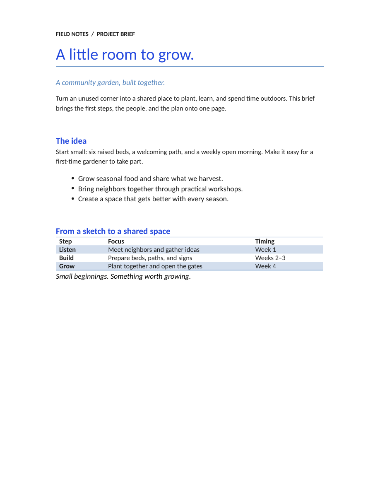
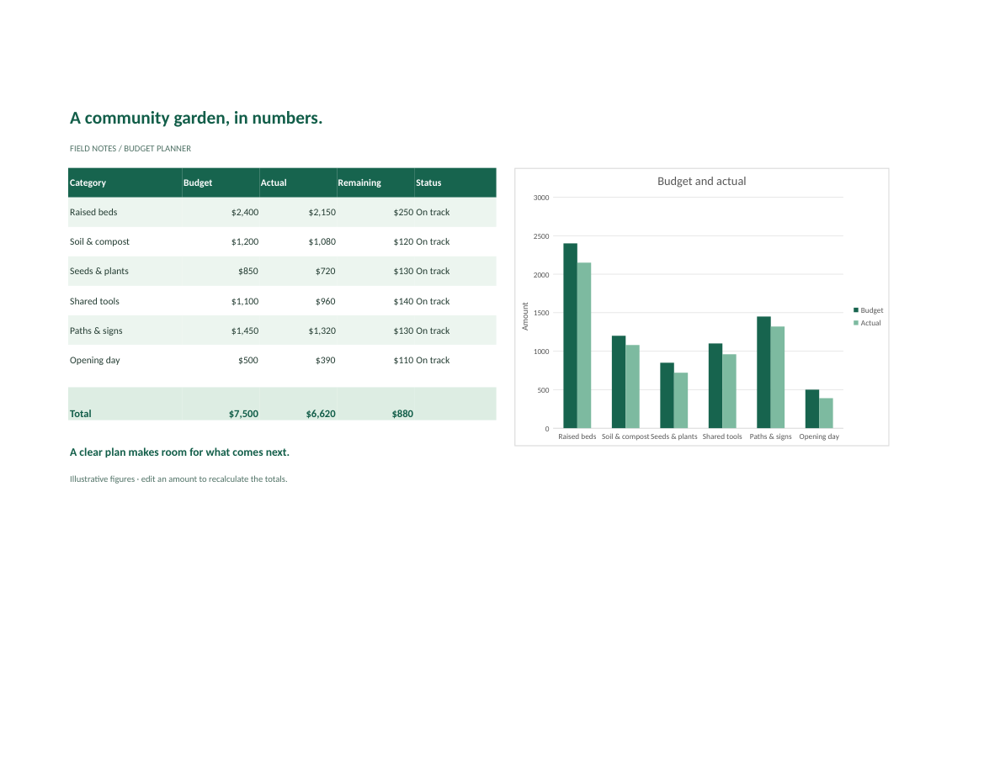

STARLING OFFICE / OPEN SOURCE
Your work.
Your Office.
Write a document. Present an idea. Make sense of your numbers. Writer, Slides, and Sheets bring it all into one free, open source suite.
Open, edit, and save DOCX, PPTX, and XLSX. In your browser or on your desktop.
01 / WRITER
Room for every word.
From a one-page brief to a long report. Write and edit on the page, with the formatting and structure your document needs.
- Styles & lists
- Tables & pictures
- Headers & footers
- Find & replace
- Spelling
- Navigation pane
Try adding a step to the project schedule.
Open Writer ↗
03 / SHEETS
Put your numbers
to work.
Plan a budget, explore a dataset, or build a model. Over 240 functions and automatic recalculation keep the answers connected to your data.
- Formulas & dynamic arrays
- Sort & filter
- Charts
- Conditional formatting
- Data validation
- Sheet protection
Try changing an amount. The totals and chart follow.
Open Sheets ↗
FAMILIAR FILES. AN OPEN SUITE.
Keep working with
the files you have.
Open a file a colleague sent, make your changes, and save it in the same format to send back.
- DOCX Writer
- Word documents, plus RTF and Markdown.
- PPTX Slides
- PowerPoint presentations, from the first slide to the final show.
- XLSX Sheets
- Excel workbooks, plus CSV for tabular data.
We test document appearance and saved files against Word, PowerPoint, and Excel. Compatibility is still improving, especially for complex layouts and advanced features. See current support and progress ↗
YOUR OFFICE, ACROSS DEVICES
On the web.
On your desktop.
The same editing tools, document layouts, and file formats.
Writer, Slides, and Sheets run together in one desktop app for macOS, Windows, and Linux. Or open any of them in your browser, with nothing to install.
Download Office on GitHub ↗Find published downloads, installation instructions, and release notes on GitHub.
- macOS Apple silicon
- A ZIP with the native Office app.
- Windows 64-bit Intel / AMD
- A portable ZIP. Extract it and open OfficeApp.exe.
- Linux 64-bit Intel / AMD
- A DEB for Ubuntu and Debian, or a Flatpak for other distributions.